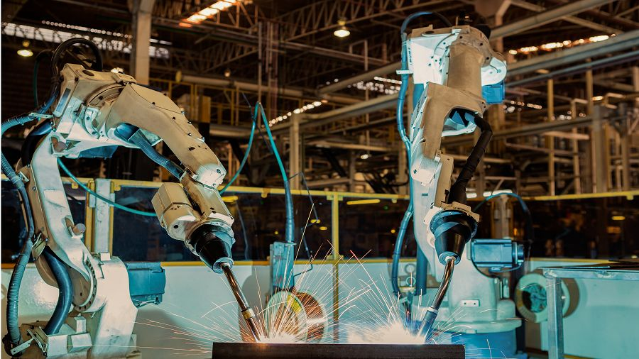
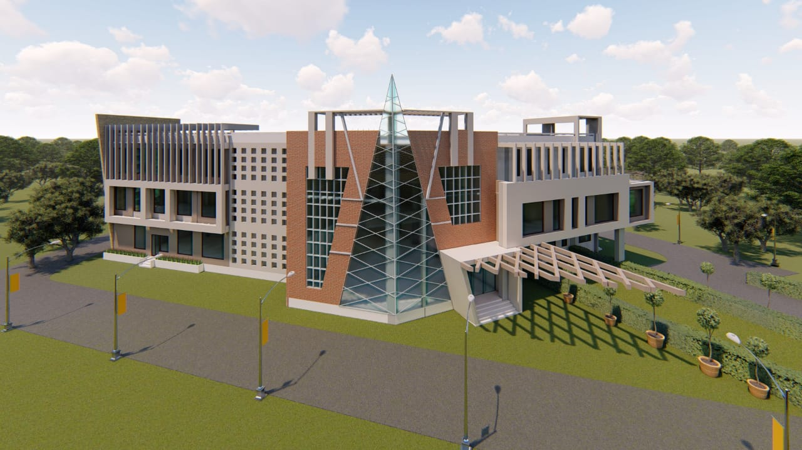
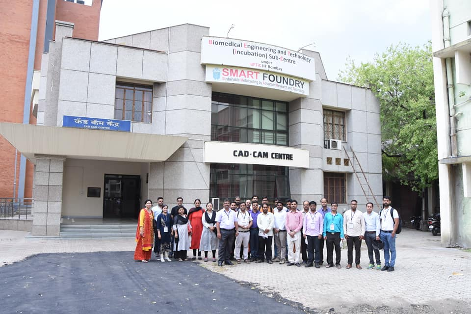

1.
Siemens-Center Of Excellence (CoE)
Location
Location
Out of 11 advanced Labs installed at VNIT Nagpur, Maharashtra here is about the Robotics Lab at Siemens Center of Excellence at VNIT, Nagpur, Maharashtra
Based on technology from ABB, the Lab teaches Robotics. Robots play an important role in the manufacturing industry, ensuring that the quality of the product is not compromised and the production volumes are met. In the Robotics Lab, we would be teaching the students to understand the working principles of a Robot, how to program it, and apply it to an application. There would be two robotics cells catering to different applications, they are:
Spot Welding Robotic Cell
MIG Welding Robotic Cell
Module Offered:
- Robotics Application:
- Spot Welding
- Arc Welding
Major Equipment:
- Spot Welding Robot IRB 1520
- Arc Welding Robot IRB 6700
Spot Welding Robotic Cell
MIG Welding Robotic Cell
Module Offered:
- Robotics Application:
- Spot Welding
- Arc Welding
Major Equipment:
- Spot Welding Robot IRB 1520
- Arc Welding Robot IRB 6700
Recommendation: State of the Art Lab Facilities

2.
Integrated Circuit and System Design Lab
Location
Location
We have EDA tools for design, simulation and verification (functional, timing, physical) for analog, digital, custom, mixed signal and RF IC domains from Cadence, Synopsys and Mentor Graphics.
Backend tools from magma, Cadence, Synopsys for placement, routing, layout and layout verification and export to GDSII format. System verliog tools from Bluspec and Coware to implement large gate count, IP based and bus intensive chips. Verilog and VHDL tools from Cadence, Synopsys, Mentor Graphics, Xilinx to write HDL code for digital circuits. Synthesis tools from Synplicity in addition to tools from earlier vendors.
PCB design tools from Cadence and Mentor Graphics for designing of circuit boards for IC testing and development. Simulation accelerator tool IMAGE from Powai labs to enable hardware acceleration of HDL code.
Backend tools from magma, Cadence, Synopsys for placement, routing, layout and layout verification and export to GDSII format. System verliog tools from Bluspec and Coware to implement large gate count, IP based and bus intensive chips. Verilog and VHDL tools from Cadence, Synopsys, Mentor Graphics, Xilinx to write HDL code for digital circuits. Synthesis tools from Synplicity in addition to tools from earlier vendors.
PCB design tools from Cadence and Mentor Graphics for designing of circuit boards for IC testing and development. Simulation accelerator tool IMAGE from Powai labs to enable hardware acceleration of HDL code.
Recommendation: State of the Art Lab Facilities

3.
CAD CAM Center
Location
Location
CAD CAM center situated at heart of VNIT Nagpur is another jewel in the illustrious
achievements of Department of Mechanical Engineering VNIT Nagpur.
Inaugurated on 30th January 2006 by Prof. V.S Sohoni (Chairman VNIT Nagpur), this CADCAM center is instituted to provide young enthusiastic engineers and researchers a completely equipped research and educational facilities which could match standards of world’s leading technical organizations and institutes.
CAD CAM center houses latest machines like CNC-WEDM,ECM,CNC-VMC, Rapid Prototyping machine, CNC-CMM,Induction furnace to name a few and provide all the latest research facilities for engineers and scientists under one roof
Inaugurated on 30th January 2006 by Prof. V.S Sohoni (Chairman VNIT Nagpur), this CADCAM center is instituted to provide young enthusiastic engineers and researchers a completely equipped research and educational facilities which could match standards of world’s leading technical organizations and institutes.
CAD CAM center houses latest machines like CNC-WEDM,ECM,CNC-VMC, Rapid Prototyping machine, CNC-CMM,Induction furnace to name a few and provide all the latest research facilities for engineers and scientists under one roof
Recommendation: State of the Art Lab Facilities
